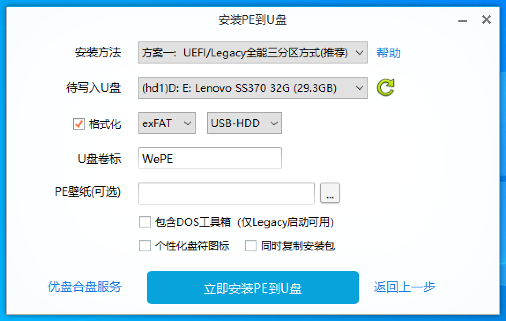

系统直接安装到U盘
-
在微软官网找到Windows系统下载 ，选择需要安装的系统。
-
准备一个U盘（容量大于8GB），并插入电脑。
-
选择“创建Windows10安装媒体”，点击立即下载，将下载启动文件。
-
打开启动文件，同意用户协议后，选择“直接安装到U盘”，再选择安装位置，等待系统安装完成。这时系统就在U盘中，可直接启动。
注意：安装到U盘会将U盘格式化。
下载系统镜像
在上述方法的第4步，选择“下载系统镜像”，即可下载系统镜像文件。这样U盘不会格式化，仍可以储存其他文件。
系统镜像文件不是完整系统，无法直接从U盘启动。但是通过Rufus烧录的镜像则可以选择直接从U盘启动。
微PE工具箱
若只是进行系统修复而不需要重装系统，可选择使用PE系统U盘。这里推荐使用“微PE工具箱”。
什么是PE？
PE简单而言就是一个极简的Windows系统，通常无法联网，但保留了系统的基本操作功能。在PE模式下，原系统的所有文件都相当于普通硬盘的文件，可以任意删除（包括
Windows\System！）。
-
在微PE工具箱官网 下载微PE工具箱。
-
准备一个U盘（容量大于8GB），并插入电脑。
-
打开微PE工具箱，选择右下角的安装到U盘，将打开设置界面。

“格式化”如果勾选，则U盘会格式化。
“U盘卷标”表示安装后U盘的名称。
- 设置完成后点击安装，等待片刻后PE系统就会安装到U盘中。此时查看“此电脑”，通常会出现一个“EFI”和另一个空盘。“EFI”盘是PE系统，另一个空盘可以作为普通U盘使用，可以储存系统镜像文件。
参考视频：
提示：为了获取更好的视频观看体验，请从PC端访问或在手机上开启电脑模式。
安装系统
微PE